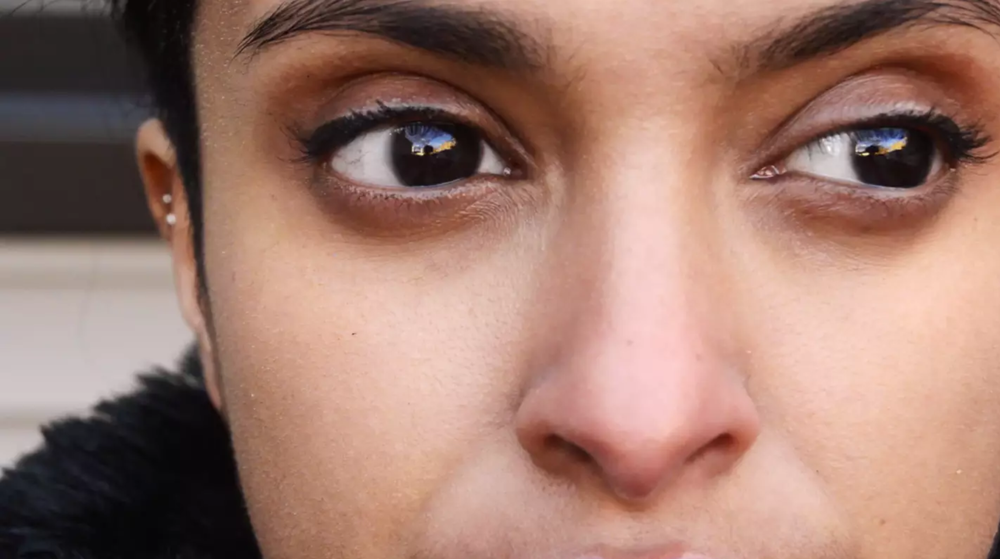

About
Return Home
I first began as a graphic design freelancer for e-commerce in 2014
I soon learned that I wanted to build user experiences and interactions
and came to the Institute of Design to better understand and execute big D design.
